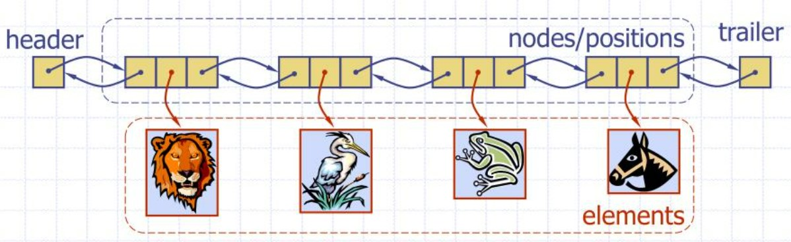

Zhiyao Liang
Macau University of Science and Technology
Some code snippets for a node in a SLL and a node in a DLL are presented below, where we assume that the data field is an integer.
struct node { // type of a node in a single linked list
int data;
struct node * next;
};
struct dNode{ // type of a node in a double-linked list
int data;
struct dNode * prev; // address of the previous node
struct dNode * next; // address of the next node
};
We can use typedef to make the type name shorter.
typedef struct node Node;
typedef struct dNode DNode;
next field is NULL, a pointer with the value 0.prev field is a NULL.A linked list can be represented by the address of the head. When the head of a list is available, the list can be used.
For a DLL, when the address of any node is available, the whole list can be used.
In the following, a function is defined for each operation. Only a function for an operation on SLL is provided if the corresponding function of DLL is very similar. A function for DLL has a name ending with "DLL", such as find_head_DLL().
Start from the address of some node, repeat finding its next node until a node with no next node (next is NULL) is found. Then, the node is the tail.
Node * find_tail(Node * someNode){
Node * current = someNode;
while(current != NULL && current -> next != NULL)
current = current->next;
return current;
}
The tail cannot be found when this function returns NULL. This can happen when the argument someNode is NULL, or maybe the list is empty. Finding the head of a DLL will be similar.
Since the function does not change the list, we can add a const to the parameter, like:
Node * find_tail(const Node * someNode){...}
This could be better.
This operation is only applicable to a double-linked list. Start from the address of some node, repeat finding its previous node until a node is found that has no previous node (prev is NULL), then the node is the tail.
DNode * find_head_DLL(DNode * someNode){
DNode * current = someNode;
while(current != NULL && current -> prev != NULL)
current = current->prev;
return current;
}
When someNode is NULL, the function will return' NULL'.
Allocate the space of a node on the heap memory, put the data item in the node, and return the new node's address.
Node * new_node_with_data(int data){
Node * newNode = (Node * ) malloc( sizeof(Node));
if (newNode != NULL) {/* Maybe malloc() is unsuccesful */
newNode->data = data;
newNode->next = NULL;
// for a DNode, add: newNode->prev = NULL;
}
return newNode;
}
When malloc() is not successful, the function new_node_with_data() will return NULL.
Find the tail of the list, create a new node put the data inside, and attach the new node after the tail.
The parameter is the address of the head of the list. A special case is that the list is empty, and the address of the head is NULL. Then, the new node will be the first node in the list and become the head. This function will return the head of the list after the operation.
Node * append_data(Node * head, int data){
Node * tail = find_tail(head);
Node * newNode = new_node_with_data(data);
if(head == NULL)
return newNode; // newNode is the head
else {
tail->next = newNode;
// for DLL, add: newNode->prev = tail;
return head;
}
}
Node * prepend_data(Node * head, int data){
Node * newNode = new_node_with_data(data);
if(head == NULL)
return newNode; // newNode is the head
else {
newNode -> next = head;
// for DLL, add: head->prev = newNode;
return newNode; // the head of the list is not changed
}
}
Given the address of a node in a list and some data, create a new node containing the data and insert the new node after the given node. Return the new node's address, which could be the head if the list is empty and the address of the given node is NULL.
Node * insert_data_after(Node * someNode, int data){
if (someNode == NULL)
return NULL; // do nothing if someNode is not found
Node * newNode = new_node_with_data(data);
newNode->next = someNode->next;
someNode -> next = newNode;
return newNode;
}
To insert some data before a node is not easy for a single linked list, becuase given an address of a node, without other information, there is no way to find its previous one.
Start from the head of a list and check the data in each node until the wanted data is found. Return the address of the node where the data is found. If the data cannot be found, return NULL.
Node * find_data(Node * head, int data){
Node * current = head;
while(current != NULL){
if(current -> data == data)
return current;
current = current->next;
}
return NULL;
}
Given the address of the head of a list, and the address of some node in the list, delete the node from the list, and connect its previous one with its next one. A parameter for the head of a list is needed, because without it there is no way to find the previous node of the one to be deleted.
A special case is that the deleted node is the head of the list. So, after the deletion, the node after the head in the previous list becomes the head in the new list. This function returns the head of the updated list after the operation.
Node * delete_node(Node * head, Node * someNode){
Node * nd = head;
if (head == NULL || someNode == NULL) // meaningless case
return NULL;
// deleting the first node in the list
if(head == someNode){
nd = someNode->next;
// for DLL, add: nd->prev = NULL;
free(someNode);
return nd;
}
// find the previous node of someNode
while(nd!=NULL && nd->next != someNode)
nd = nd->next;
if(nd!=NULL){ // someNode is found in the list
nd->next = someNode->next;
// for DLL, add: someNode->next->prev = nd;
free(someNode);
}
// if someNode is not found in the list, do nothing.
return head; // the list still has the same head.
}
Starting from the head, touch each node and increment the count, until the tail is touched.
int count(Node * head){
Node * current = head;
int count = 0;
while (current != NULL){
count++;
current = current -> next;
}
}
Touch each node in the list, and print the data of each node.
void print_list(Node * head){
Node * current = head;
while (current != NULL){
printf("%d ", current -> data);
current = current -> next;
}
puts("");
}
Touch each node in a list and free its space. Remember to record the next node before a node is freed. Return the number of nodes freed.
int free_list(Node * head){
int count = 0;
Node * current = head;
Node * nextNd = NULL;
while(current != NULL){
nextNd = current -> next;
free(current);
current = nextNd;
count++;
}
return count;
}
Touch each node of a given list; for each node, create a new node that contains the same data and append the new node to a new list that is initially empty.
Node * clone_list(Node * head){
Node * current = head;
Node * newListHead = NULL;
Node * newListTail = NULL;
Node * newNd;
if(head == NULL)
return NULL;
if( (newNd = new_node_with_data(head->data)) == NULL){
printf("Creating new node fails\n");
return NULL;
}
newListHead = newListTail = newNd;
current = head->next;
while(current != NULL){
if( (newNd = new_node_with_data(current->data)) == NULL){
printf("Creating new node fails\n");
free_list(newListHead);
return NULL;
}
newListTail->next = newNd;
current = current->next;
newListTail = newListTail->next;
}
return newListHead;
}
Touch each node in a list and apply a function to each node.
void map_on_list(Node * head, void(*f)(Node *)){
Node * current = head;
while(current != NULL) {
f(current);
current = current->next;
}
}
For example, a list can be printed by mapping a function to a list.
void print_node(Node * nd){
printf("%d ", nd->data);
}
void print_list_v2(Node * head){
map_on_list(head, print_node);
}
We want to use a program with a user menu to test the tool functions. The code of this program should be provided together with this document.
The words head and header appear in the documents on the linked list describing the first node, sometimes interchangeably. Is there any difference between them? The author of this article prefers the following understanding:
According to [1]:
In a linked list, the "head" node is the first node in the list and serves as the entry point for accessing the rest of the nodes. It typically contains a reference to the first node in the list.
The "header" node, on the other hand, is not a standard term in linked lists. It may refer to an additional node that is sometimes used to store metadata or provide additional functionality, but its usage can vary depending on the specific implementation of the linked list.
In general, the head node is essential for navigating and manipulating the linked list, while the header node, if used, may serve a specific purpose depending on the requirements of the linked list implementation.
Similarly, to distinguish the two words tail and trailer, we can let tail mean the name of the last node in a list while let trailer mean something (metadata) describing the last node.
The meaning of the header and trailer can be shown in a picture found in [2], as shown below.

[1] https://www.quora.com/What-is-the-purpose-of-the-head-and-header-node-in-a-link-list
[2] “PPT - Linked Lists PowerPoint Presentation, free download - ID:244969”
https://www.slideserve.com/stan/linked-lists